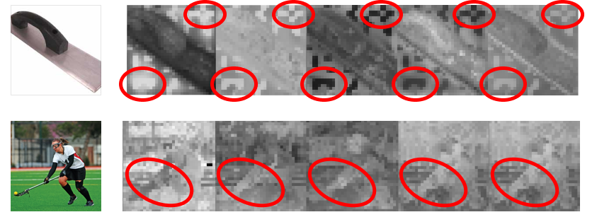
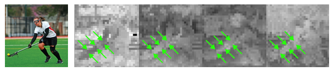
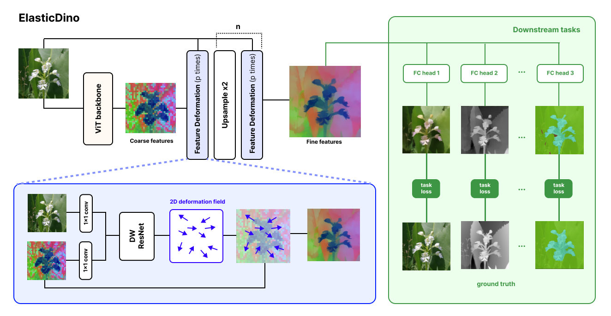

ElasticDino
Dense Semantic Features using Elastic Deformations
TL;DR
While vision transformers such as the "Dino" family are being used in various downstream tasks, they are limited in their output resolution due to the quadratic complexity of self-attention.
ElasticDino serves as a lightweight adapter to these models upscaling the output resolution through spatial deformations, using the original full resolution image for guidance. Through the upscaling process it also fixes various artifacts from the base models and creates high-resolution feature maps with sharp semantics beneficial for downstream tasks.
Motivation
DINO features are low resolution and prone to artifacts
Standard ViT backbones operate on image patches, often yielding 32x32 or 64x64 feature grids for images that downstream models need to reason about at full resolution. This introduces positional noise, feature bleeding across boundaries, and extra burden on task-specific decoders.


Method
Task-guided Elastic Deformations
ElasticDino alternates bilinear upsampling with lightweight Feature Deformation layers. Each layer reads the current semantic feature map and the image at the same resolution, predicts a 2D deformation field with depthwise-separable convolutional blocks, and warps the features instead of directly rewriting their values.

Shared Deformations
Each Feature Deformation layer predicts a 2D warp field from the image and current feature map. The same spatial warp is applied to all channels, matching the channel-consistent structure of ViT artifacts while keeping computation lightweight.
Semantic Preservation
The network warps existing features rather than directly rewriting feature values. Sampling from the original feature map preserves backbone semantics, discourages hallucinated task labels, and sharpens boundaries without smoothing away object identity.
Pixel-Level Heads
ElasticDino trains without ground-truth high-resolution DINO features. Instead, simple 1x1 task heads supervise every pixel for RGB, depth, semantic segmentation, normals, shading, albedo, residuals, and intrinsic decomposition.
Because the heads operate independently at each pixel, they cannot hide spatial mistakes with decoder context. The deformation layers must therefore align the frozen semantic features to image structure before the heads can solve the dense tasks.
Results
Qualitative Results
Feature Maps
Slide 1 of 8
Upscaled feature map comparisons through visualizations of the first three PCA components of the resulting features.
Downstream Tasks - Segmentation
Slide 1 of 16
Comparison of segmentation over upscaled features, COCO dataset
Downstream Tasks - Depth Estimation
Slide 1 of 4
Comparison of depth estimation over upscaled features, COCO dataset
Visualizing Deformations
Slide 1 of 5
Visualization of deformations along the different resolution stages of the upscaling process and their effect on the features while being upscaled. Deformations are visualized using color wheel optical flow, showing where each pixel was sampled from. Features are visualized through the first three PCA components.
Quantitative Results
Semantic Segmentation
| Model | Cityscapes mIoU ↑ | COCO mIoU ↑ | ADE20k mIoU ↑ |
|---|---|---|---|
| ElasticDino-L | 0.6875 | 0.6270 | 0.5299 |
| OneFormer-sw-L | 0.6412 | 0.6264 | 0.5109 |
| Mask2Former-sw-L | 0.5986 | 0.6239 | 0.4928 |
Segmentation and Depth downstream tasks comparison against state of the art upsamplers - DINOv2
Bold = best, underline = second best.
| Method | Semantic Segmentation | Depth Estimation | ||||||||
|---|---|---|---|---|---|---|---|---|---|---|
| COCO | VOC | ADE20K | Cityscapes | COCO | ||||||
| mIoU ↑ | Acc ↑ | mIoU ↑ | Acc ↑ | mIoU ↑ | Acc ↑ | mIoU ↑ | Acc ↑ | δ1 ↑ | RMSE ↓ | |
| Nearest | 56.17 | 76.97 | 76.41 | 93.80 | 37.27 | 71.91 | 54.05 | 90.36 | 58.08 | 0.70 |
| Bilinear | 59.03 | 79.07 | 80.70 | 95.17 | 39.23 | 73.69 | 59.37 | 92.47 | 59.92 | 0.66 |
| FeatUp | 60.10 | 79.95 | 81.08 | 95.32 | 38.82 | 73.74 | 56.06 | 91.86 | 61.69 | 0.64 |
| LoftUp | 61.62 | 81.11 | 84.18 | 96.22 | 41.51 | 75.41 | 62.13 | 93.53 | 58.01 | 0.68 |
| JAFAR | 60.32 | 80.30 | 84.19 | 96.18 | 40.16 | 74.39 | 61.58 | 93.45 | 60.05 | 0.65 |
| AnyUp | 60.68 | 80.59 | 83.81 | 96.13 | 40.39 | 74.76 | 60.99 | 93.37 | 60.65 | 0.64 |
| UPLift | 61.10 | 80.85 | 84.82 | 96.41 | 41.29 | 75.05 | 65.02 | 94.34 | 60.55 | 0.64 |
| ED (ours) | 62.72 | 81.74 | 86.00 | 96.78 | 42.10 | 76.00 | 61.33 | 93.44 | 64.14 | 0.57 |
Segmentation and Depth downstream tasks comparison against state of the art upsamplers - DINOv3
Bold = best, underline = second best.
| Method | Semantic Segmentation | Depth Estimation | ||||||||
|---|---|---|---|---|---|---|---|---|---|---|
| COCO | VOC | ADE20K | Cityscapes | COCO | ||||||
| mIoU ↑ | Acc ↑ | mIoU ↑ | Acc ↑ | mIoU ↑ | Acc ↑ | mIoU ↑ | Acc ↑ | δ1 ↑ | RMSE ↓ | |
| JAFAR | 62.2 | 81.38 | 82.9 | 95.96 | 42.31 | 75.7 | 57.25 | 92.3 | 58.2 | 0.68 |
| AnyUp | 62.70 | 81.69 | 83.88 | 96.21 | 42.69 | 76.02 | 58.32 | 92.81 | 59.43 | 0.66 |
| UPLift | 63.52 | 82.14 | 84.86 | 96.58 | 44.12 | 76.62 | 62.31 | 93.82 | 59.29 | 0.66 |
| ED (ours) | 64.04 | 82.43 | 86.26 | 96.89 | 44.57 | 77.03 | 62.91 | 94.03 | 61.10 | 0.62 |
Runtime and Memory
Run time comparisons of ElasticDino with competing feature upscaling works over DINOv2
| Metric | ED (ours) | AnyUp | LoftUp | JAFAR | UPLift |
|---|---|---|---|---|---|
| Avg Time (ms) | 108.41 | 545.42 | 418.89 | 177.79 | 147.27 |
| Peak mem (GB) | 0.71 | 1.94 | 8.31 | 7.33 | 9.22 |
Citation
@misc{mizrahi2026elasticdino,
title={ElasticDino: Dense Semantic Features using Elastic Deformations},
author={Mizrahi, Ulysse and Zaretzky, Sean and Danon, Dov and Bermano, Amit H.},
year={2026}
}